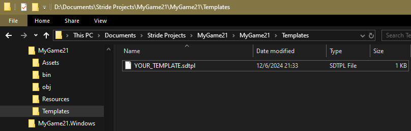
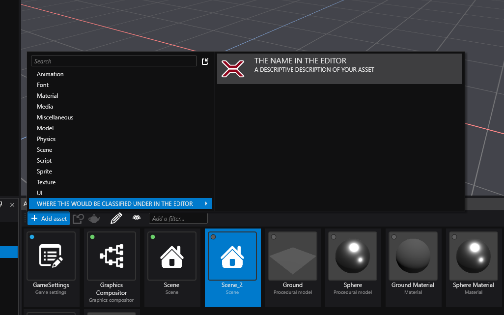

Creating Custom Assets
Stride supports the creation of custom asset types that can be referenced in your scenes as well as reference other assets.
To do so, you must add a reference to the Stride.Core.Assets package in your game's .csproj:
Here's how it looks like in a default game project:
<Project Sdk="Microsoft.NET.Sdk">
<PropertyGroup>
<TargetFrameworks>net8.0-windows</TargetFrameworks>
</PropertyGroup>
<ItemGroup>
<PackageReference Include="Stride.Engine" Version="4.2.0.1" />
<PackageReference Include="Stride.Video" Version="4.2.0.1" />
<PackageReference Include="Stride.Physics" Version="4.2.0.1" />
<PackageReference Include="Stride.Navigation" Version="4.2.0.1" />
<PackageReference Include="Stride.Particles" Version="4.2.0.1" />
<PackageReference Include="Stride.UI" Version="4.2.0.1" />
<PackageReference Include="Stride.Core.Assets.CompilerApp" Version="4.2.0.1" IncludeAssets="build;buildTransitive" />
<PackageReference Include="Stride.Core.Assets" Version="4.2.0.1" />
</ItemGroup>
</Project>
Warning
Make sure that the TargetFrameworks and all package versions match your current Stride version. The example above shows version 4.2.0.1 for reference.
Inside the same project, create a new csharp file and replace its content with the following:
using System.Collections.Generic;
using System.Threading.Tasks;
using Stride.Core;
using Stride.Core.Assets;
using Stride.Core.Assets.Compiler;
using Stride.Core.BuildEngine;
using Stride.Core.Serialization;
using Stride.Core.Serialization.Contents;
using Stride.Engine;
using Stride.Engine.Design;
namespace YOUR_GAME_NAMESPACE;
/// <summary>
/// Runtime representation of the asset, this is the actual class you would use in your scripts
/// </summary>
[DataContract]
[ContentSerializer(typeof(DataContentSerializerWithReuse<YOUR_CLASS>))]
// The ReferenceSerializer attribute is required when specifying a DataSerializerGlobal with ReferenceSerializer<>,
// The two of them specifies to the serializers that this class is a runtime Asset
[ReferenceSerializer, DataSerializerGlobal(typeof(ReferenceSerializer<YOUR_CLASS>), Profile = "Content")]
// The line below ensures that the asset's reference is re-used instead of cloned for all new instances when instantiating prefabs
[DataSerializerGlobal(typeof(CloneSerializer<YOUR_CLASS>), Profile = "Clone")]
public class YOUR_CLASS
{
// Replace this with whatever you would want this asset to hold at runtime
public List<Prefab> PrefabCollection { get; set; } = new();
}
/// <summary>
/// Design time and file representation of <see cref="YOUR_CLASS"/>, you can add content here that won't be included in the build
/// </summary>
[AssetDescription(FileExtension, AllowArchetype = false)]
[AssetContentType(typeof(YOUR_CLASS))]
[AssetFormatVersion(nameof(YOUR_GAME_NAMESPACE), CurrentVersion, "1.0.0.0")]
public sealed class YOUR_CLASS_ASSET : Asset
{
private const string CurrentVersion = "1.0.0.0";
public const string FileExtension = ".blks";
// Replace this with whatever you would want this asset to have while inside the gamestudio
public List<Prefab> PrefabCollection { get; set; } = new();
}
/// <summary> Compiler which transforms your <see cref="YOUR_CLASS_ASSET"/> into <see cref="YOUR_CLASS"/> when building your game </summary>
[AssetCompiler(typeof(YOUR_CLASS_ASSET), typeof(AssetCompilationContext))]
public sealed class YOUR_CLASS_COMPILER : AssetCompilerBase
{
protected override void Prepare(AssetCompilerContext context, AssetItem assetItem, string targetUrlInStorage, AssetCompilerResult result)
{
var asset = (YOUR_CLASS_ASSET)assetItem.Asset;
// you can have many build steps, each one is running an AssetCommand
result.BuildSteps = new AssetBuildStep(assetItem);
result.BuildSteps.Add(new DESIGN_TO_RUNTIME_COMMAND(targetUrlInStorage, asset, assetItem.Package));
}
public override IEnumerable<ObjectUrl> GetInputFiles(AssetItem assetItem)
{
// Yield assets that must be built before this one is built,
// this is for cases were you need to read from a compiled version of an asset to build this one.
// Note that creating cyclic references through this method will cause a deadlock when building
// (e.g.: A is input of B while B is input of A)
// below only for reference purposes, useless in this context
var asset = (YOUR_CLASS_ASSET)assetItem.Asset;
foreach (var block in asset.PrefabCollection)
{
var url = AttachedReferenceManager.GetUrl(block);
if (!string.IsNullOrEmpty(url))
{
yield return new ObjectUrl(UrlType.Content, url);
}
}
}
/// <summary>
/// An <see cref="AssetCommand"/> that converts design time asset into runtime asset.
/// </summary>
public class DESIGN_TO_RUNTIME_COMMAND(string url, YOUR_CLASS_ASSET parameters, IAssetFinder assetFinder)
: AssetCommand<YOUR_CLASS_ASSET>(url, parameters, assetFinder)
{
protected override Task<ResultStatus> DoCommandOverride(ICommandContext commandContext)
{
var assetManager = new ContentManager(MicrothreadLocalDatabases.ProviderService);
var runtimeObject = new YOUR_CLASS{ PrefabCollection = Parameters.PrefabCollection };
assetManager.Save(Url, runtimeObject);
commandContext.Logger.Info($"Saving {nameof(YOUR_CLASS)}: {runtimeObject.PrefabCollection}");
return Task.FromResult(ResultStatus.Successful);
}
}
}
Warning
Every changes made to the runtime asset will break previously built asset databases, make sure to clean the solution or manually delete the build artifacts stride generates for assets (YOUR_PROJECT.Windows/obj/stride and bin/db) after changing the class to make sure the asset database is fully rebuilt on the next build.
This takes care of the support for this asset, you could create a *.blks file inside your Assets directory and fill in the content manually, but might as well do it through the editor ...
Adding a section for the Add asset menu inside the editor
Create a new directory named Templates within your Game's directory, this directory will be used to store your templates.
Inside of that directory, create a new file named after your new asset with the .sdtpl extension.

Open the file and paste the following into it
!TemplateAssetFactory
Id: 21CC3354-9F0B-4D1F-8242-62D56454B27C
AssetTypeName: YOUR_CLASS_ASSET
Name: THE NAME IN THE EDITOR
Scope: Asset
Description: A DESCRIPTIVE DESCRIPTION OF YOUR ASSET
Group: WHERE THIS WOULD BE CLASSIFIED UNDER IN THE EDITOR
DefaultOutputName: THE DEFAULT FILE NAME
Edit the different fields appropriately,
Idmust be unique ! There are a couple of services online to generate one if you need to, search forgenerate guid onlineAssetTypeNamemust match the name of the class that inherits fromAsset(the namespace can be omitted)
Now you have to edit your *.sdpkg to include this new template, to do so you just have to add the following lines below your TemplateFolders:
TemplateFolders:
- Path: !dir Templates
Group: Assets
Files:
- !file Templates/YOUR_TEMPLATE.sdtpl
Here's how it looks like when included into a default game *.sdpkg:
!Package
SerializedVersion: {Assets: 3.1.0.0}
Meta:
Name: MyGame21
Version: 1.0.0
Authors: []
Owners: []
Dependencies: null
AssetFolders:
- Path: !dir Assets
- Path: !dir Effects
ResourceFolders:
- !dir Resources
OutputGroupDirectories: {}
ExplicitFolders: []
Bundles: []
TemplateFolders:
- Path: !dir Templates
Group: Assets
Files:
- !file Templates/YOUR_TEMPLATE.sdtpl
RootAssets: []
And you're finally done, have fun !
